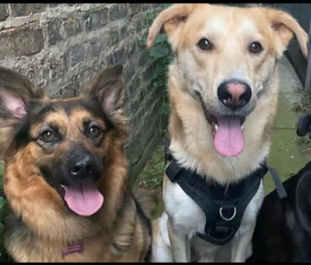
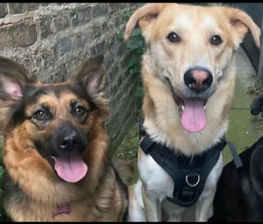
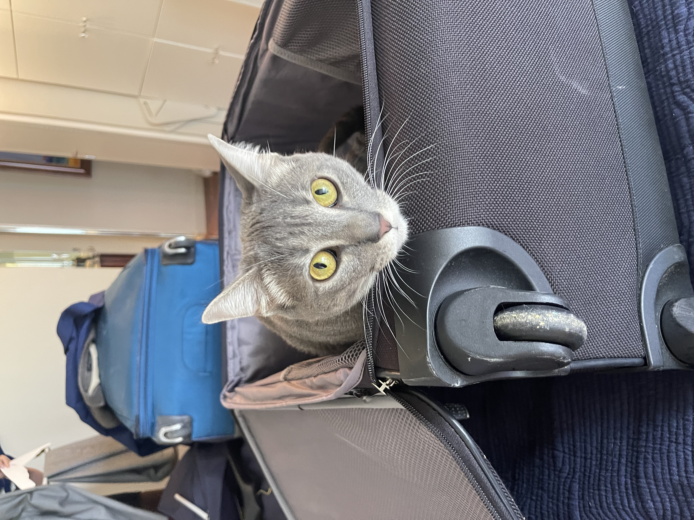
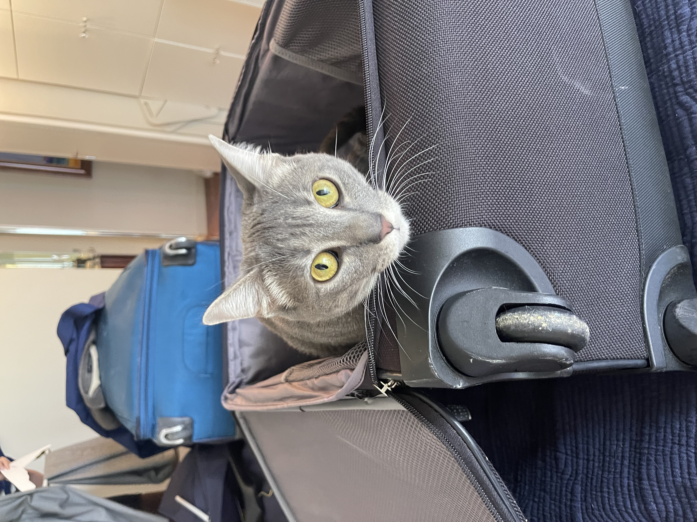
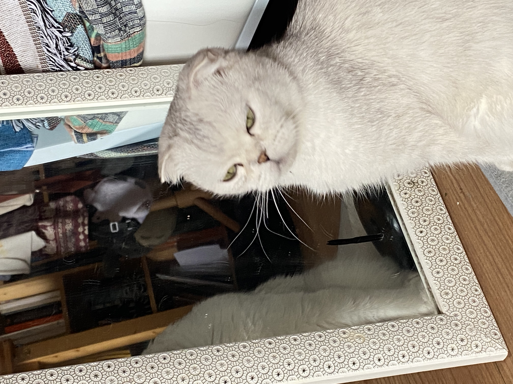
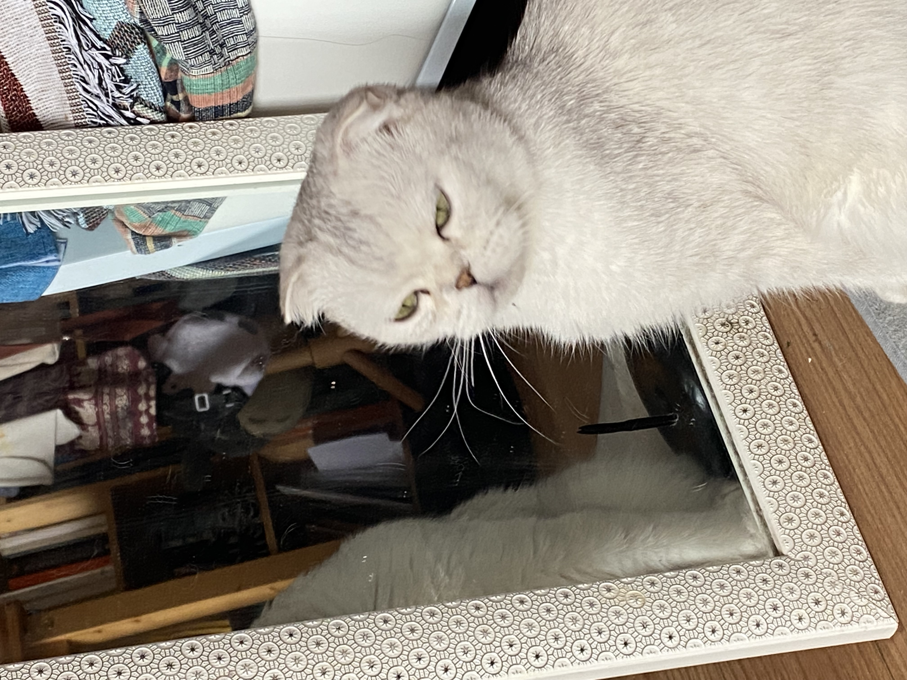

Luna

Luna is a German shepherd mix and a fireball of energy. Oftentimes, destroying anything in her path she will take and hide all your socks, shoes, and clothes for her to chew on. She loves playing catch at the park, it always gives her the zoomies.
Luna is a very jealous, loving, and protective dog. She really embraces her inner chihuahua and will bark at any stranger, car, or noise at night. She makes the perfect guard dog. But she is not at all aggressive. Luna is all bark no bite!
Likes
- Chicken
- Park
- Belly Rubs
Photo Gallery

 


Cooper

Cooper is an 8yr old border collie and lab mix. We rescued him from the Humane Society as a puppy! He loves going on long walks/runs, but he stops to sniff something every few steps. He’s pretty friendly, but he loves to loudly bark at delivery people who ring the doorbell.
Whenever it is movie night, Cooper has to join on the couch/bed or he feels left out. He loves to cuddle and pats on his tummy. Cooper will play fetch for about 2 or 3 rounds, but he quickly gets bored. He leaves his toys all around the house for the rest of the family to find.
Likes
- Peanut butter
- Going on long walks
- Sleeping
Photo Gallery


Jiji

Jiji is a one year old gray tabby cat born in Miami, FL. She was adopted when she was a few weeks old. Her birthday is July 2nd 2022. Her favorite toy is her fish wand and her second favorite toy is a slinky.
In her free time she likes to sit on the windowsill and people watch. She also likes to collect any stray ponytails she can find in bathrooms, on the floor, and on bedside tables. She has a very high pitched meow and loves to be brushed.
Likes
- Slinkies
- Eating plants
- Hair ties
Photo Gallery
 



Cooky

Cooky is an 11 month old Bernedoodle. He likes to play, run around, go on walks, eat snacks and treats (not his own dog food), get pets and belly rubs, and cuddle. You can usually find him playing with his toys in the living room, chilling in the office room with my dad, or cooling off in the garage.
He is still a baby, but he can get super hyper. Whenever someone rings the doorbell, Cooky gets really excited, barking and dashing towards the front door. He also jumps really high when he’s hyper and wags his tail like crazy. Overall, though, he likes to chill and cuddle just as much as he likes to play.
Likes
- Dog cookies
- Pets and belly rubs
- Running around the house
Photo Gallery


Cheeto (Chicken)

Cheeto is a cat who likes to eat a lot and play a lot. He has an obsession with his grandpa (human) and tries to get outside every single day. If he isn’t causing problems, he is usually hiding in a seven foot tall cat tree and sleeping.
Another name for Cheeto is Chicken, because sometimes he sits very scrunched up and ends up looking like a rotisserie chicken. He was nicknamed this by one of his friends, and now he understands it as his own name. He is about six years old and still acts like a younger cat, despite being middle-aged.
Likes
- Treats
- Exploring
- My Dad
Photo Gallery


Milktea

Milktea is a Scottish fold with a personality of a princess. She loves her veggies and refuses to eat anything dropped on the ground. She makes it clear when she has a demand of any sort by complaining in a loud, distinguished manner. If what she says could be translated, it probably would be, “This is atrocious, the water container has been empty for the 3rd time this week. I want to see the manager.”
Despite her cuteness and royalty, she actually suffers from a genetic disorder intentionally brought upon by humans. I highly advise against keeping a Scottish fold because they are in constant pain when they reach around 2 years old. Cartilage accumulates around her paw joints and tail joints and it becomes painful for them to even walk. She is living evidence of human’s cruelty of breeding animals to look pretty while sacrificing the animals’ health.
Likes
- She loves individual corn kernels served on human hands
- She enjoys sitting royally on suitcases to claim ownership of her humans
- She prefers to be alone and sit on soft surfaces in her free time
Photo Gallery
 


Jax

Jax is a kitten, about five months old that I found this summer at a gas station while traveling to Marquette, Michigan. He was scared and malnourished, crying in the parking lot. I took him with me and after some healthy meals and a trip to the vet he is doing great!
My roommates and I just recently moved and Jax has been having a hard time getting used to the large house since we were previously living in a small apartment. Jax is incredibly playful and loves to run around, but when he is sleepy he is happy to be held.
Likes
- Toys
- Going outside
- Attention
Photo Gallery